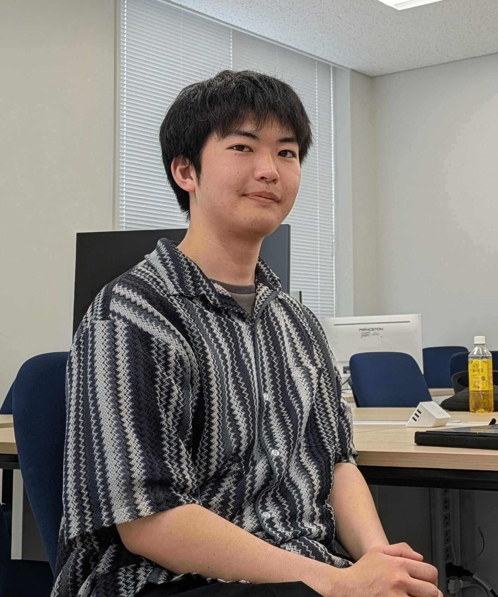

責任感
任された仕事に責任を持ち、最後までやり遂げることを大切にしています。
具体的なエピソード：アルバイトで担当している締め作業について記載。
Personal Portfolio
情報技術を学びながら、興味を持ったことを自分の手で試し、形にすることを大切にしています。

01 / About
はじめまして、壁谷宗汰（かべや そうた）です。愛知工業大学 情報科学部に所属し、情報技術を中心に学んでいます。
大学では、プログラミングやデータベース、AI・画像処理などの分野に触れてきました。興味を持ったことについて自分で調べ、実際に手を動かして試すことを大切にしています。
このサイトでは、大学での学びや制作物、これまでの経験、趣味などを紹介します。
02 / Strengths
自分の特徴を、実際の経験や行動とあわせて紹介します。
任された仕事に責任を持ち、最後までやり遂げることを大切にしています。
具体的なエピソード：アルバイトで担当している締め作業について記載。
決めたことを地道に続け、必要なことに着実に取り組みます。
具体的なエピソード：学業やアルバイトで継続している取り組みを記載。
現状のやり方を振り返り、より良くするための方法を考えます。
具体的なエピソード：制作物で工夫・修正した点を記載。
周囲の状況を見ながら、自分にできることを考えて行動します。
具体的なエピソード：アルバイトでの声かけや引き継ぎなどを記載。
03 / Skills
授業や制作で触れた技術を掲載します。習熟度や使用経験は、実態に合わせて追記してください。
使用した授業・制作物・できることを追記。
学習内容や実際に試したことを追記。
04 / Projects
完成度だけでなく、制作の目的や考えたこと、工夫した点も紹介します。
スマートフォンで料理動画を撮影する際に、撮影範囲やカメラ位置を合わせやすくすることを目的としたWebアプリです。
※研究テーマや別の制作物がまとまったら、ここにカードを追加してください。
05 / Experience
アルバイト
担当している業務、継続していること、周囲のために工夫していることを具体的に記載。
インターンシップ
参加したプログラムの内容、取り組んだこと、学んだことを記載。
大学・研究
印象に残っている学習や研究、発表、チームでの経験などを記載。
06 / Interests
技術以外の関心も、自分らしさが伝わる範囲で紹介します。
好きなアーティストや、音楽の楽しみ方などを記載。
趣味の内容や、楽しんでいることを記載。